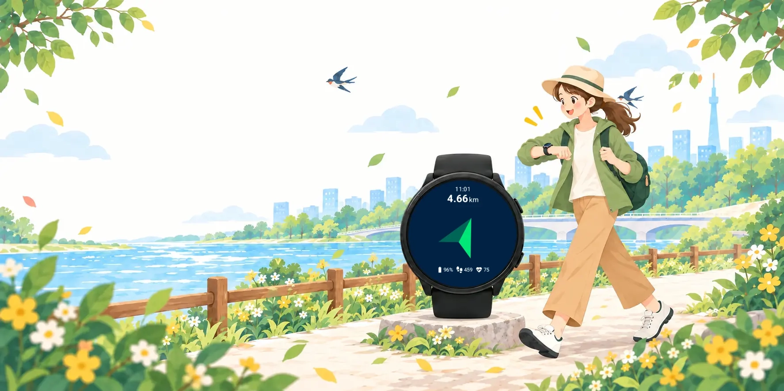
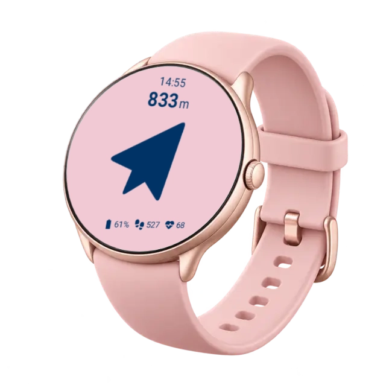
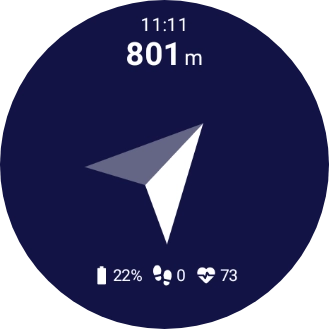
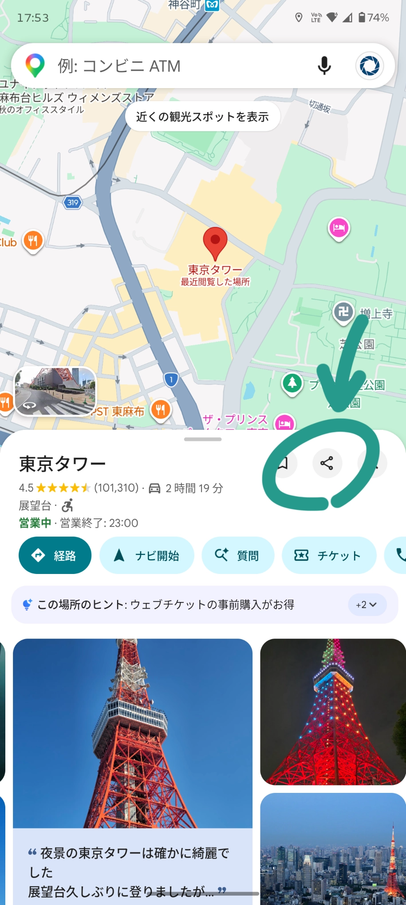
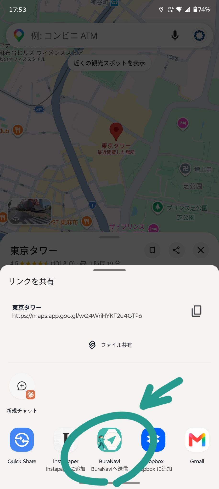
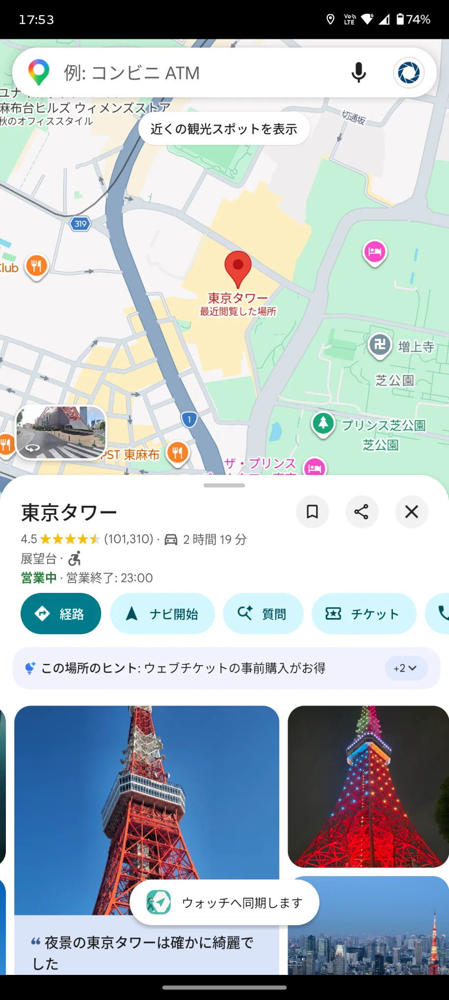
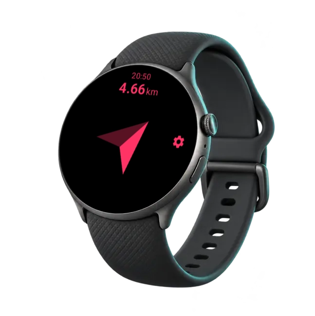
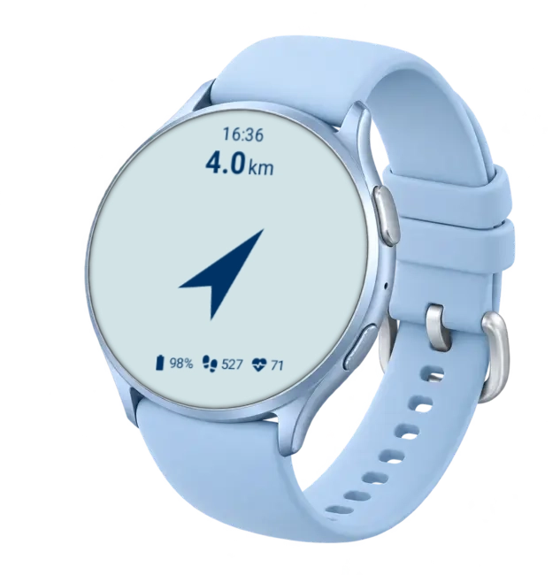

Google Mapsから共有
目的地を選んだら、共有先からBuraNaviを選択。アプリ内で検索し直す必要はありません。
BuraNavi ぶらナビ
行きたい場所まで、方向と距離だけ。
寄り道しながらのんびり歩きたい人のためのシンプルなナビです。
スマホ版・Wear OS版をダウンロードできます。
Google Mapsの共有機能を利用します。Googleによる公式提供・提携アプリではありません。

What you can do
目的地検索は使い慣れたGoogle Mapsに任せて、移動中はウォッチの矢印と距離を確認するだけ。
目的地を選んだら、共有先からBuraNaviを選択。アプリ内で検索し直す必要はありません。
Wear OSウォッチに目的地の方向と距離を表示。ひと目で進む方向を確認できます。
歩きながら何度もスマートフォンを開かず、手首で移動方向を確認できます。

How it works
スマートフォンとWear OSウォッチの両方にBuraNaviをインストールしてから操作します。

On your wrist
スマートフォンで送った目的地を、シンプルなウォッチ画面で確認できます。
時刻・バッテリー・歩数・心拍数は個別に表示設定ができます。




Download
スマホ版とWear OS版のAPKをそれぞれダウンロードして、両方の端末にインストールしてください。
Android smartphone
BuraNavi-mobile.apk
Wear OS watch
BuraNavi-wear.apk
ご注意：BuraNaviは現在、Google Playを経由せずAPKファイルで配布しています。インストール前に配布元とバージョンをご確認ください。
Installation
端末ごとに手順が異なります。該当する項目を開いて確認してください。
端末やAndroidのバージョンによって、設定名・画面が異なる場合があります。
設定名や接続方法はWear OSのバージョンや機種によって異なる場合があります。インストール後は、不要であればADBデバッグとワイヤレスデバッグを無効にしてください。
Requirements
スマートフォンとWear OSウォッチの両方にBuraNaviをインストールして使用します。

FAQ
現時点ではGoogle Playでは配布していません。BuraNavi公式サイトからスマートフォン版・Wear OS版のAPKをダウンロードしてご利用ください。
目的地の方向と距離を確認するには、BuraNaviをインストールしたWear OSウォッチが必要です。
Wear OS 3以降の端末を対象としています。ただし、すべての機種での動作を保証するものではありません。
BuraNaviは、ウォッチ上で現在地から目的地までの方向・距離を計算するために位置情報を使用します。また、Google Mapsから共有された目的地を取得する際、必要に応じてGoogleのGeocoding APIを利用します。詳細は下部のプライバシーポリシーをご確認ください。
新しいバージョンが公開された場合は、この公式サイトから最新版のAPKをダウンロードし、現在のアプリに上書きインストールしてください。スマートフォン版・Wear OS版は、必要に応じて両方を最新版へ更新してください。
BuraNavi
スマートフォンで選んだ目的地を、ウォッチでシンプルに確認。